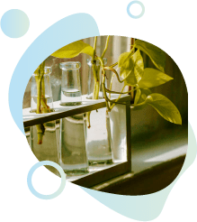

Las verduras necesitan 3 cosas para crecer: Suelo saludable y
nutritivo, la cantidad adecuada de agua y luz solar.
Si en tu hogar el sitio más soleado cambia a lo largo del año,
trata de cultivar tus vegetales en macetas lo suficientemente
manipulables para su traslado, de modo que puedan seguir el sol.

2
Mantén la simpleza.
“Más puede significar menos” Cada verdura tiene distinto
proceso de crecimiento, por lo que si tu objetivo es lograr el
resultado final de disfrutar sus frutos, deberás aprender a cerca
de sus cuidados ¡Empieza por tu vegetal favorito!.
Piensa en el espacio que tienes y cuál se adapta perfectamente a
él. En los espacios pequeños se adaptan muy bien las variedades
“enanas”.
3
Haz un plan de cultivo.
Se necesita una planificación cuidadosa para lograr que sus
vegetales crezcan exitosamente. Deberás tener en cuenta :
- Temporada más productiva de cada verdura: Esto ayudará a plantar
su vegetal en el momento adecuado.
- Ten en cuenta que hay vegetales que es posible que den frutos
constantemente en cualquier momento del año, por lo que pueden
convertirse en alimentos básicos.
“Una pequeña acción puede tener una gran repercusión”.
Beneficios
Cultivando tus propios vegetales lograrás:
Impacto ecológico
Mejorar la calidad del aire local y el bienestar mental.
Proporcionar alimento muy necesario para los seres
polinizadores.
Reducir el kilometraje de alimentos y la necesidad de envases en
las verduras.
No hay maquinaria, cadenas de suministro, herbicidas o
pesticidas.
Alimentos saludables
El tiempo que transcurre entre la recolección de las verduras y su
consumo es importante, y no hay forma más rápida de pasar de la
planta al plato que si las cosecha usted mismo.
Cuanto más frescas son las verduras, más sanas son. Esto se debe a
que la exposición al calor, la luz y el oxígeno hace que algunos de
los nutrientes y vitaminas se descompongan y pierdan sus beneficios
para la salud.
¡Suscribite a nuestro newsletter!
Recibí nuestra Guía de cultivo mensual, novedades de las verduras de
temporada con instrucciones paso a paso.
¡Hola! Soy Mariela, estudiante de agronomía y fundadora de
Vegetales en mi Balcón
Las verduras cultivadas en casa han sido un alimento básico para
mí toda mi vida. Tuve la suerte de crecer en una granja
hortícola en la ciudad de Entre Ríos, Argentina ¡Me encantaba
ayudar en lo que podía!
Al finalizar la secundaria debí mudarme a la ciudad de Buenos
Aires para estudiar la carrera de Agronomía y continuar con mis
sueños.
En mis tiempos libres planifique que aunque viviera en un
cuarto pequeño traería un poco de mi hogar a mi balcón, en mis
ventanas y a la ciudad.
Al poco tiempo conocí muchas personas que mostraban interés en
cultivar sus propias verduras y en la ecología pero sin saber
ni donde ni como empezar . Poco a poco fue así como nació
Vegetales en mi Balcón.
Misión
Queremos que sea lo más fácil posible para las personas cultivar
vegetales en espacios reducidos del hogar, compartiendo esta
increíble experiencia y promoviendo los beneficios positivos que
trae el cultivo de sus propios vegetales, tanto para el impacto
ambiental como para la salud física y mental.
Hemos planificado cuidadosamente guías mensuales accesibles con
la suscripción en nuestro
newsletter, con variedades
específicas de hortalizas, elegidas para prosperar en espacios
pequeños en su temporada más productiva. Si tiene un espacio en
un balcón, terraza o patio, nos encantaría ayudarlo a crear y
cuidar su propia huerta urbana.